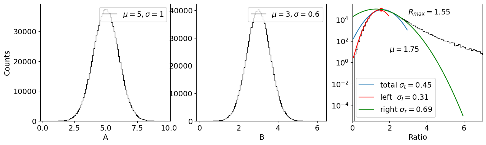
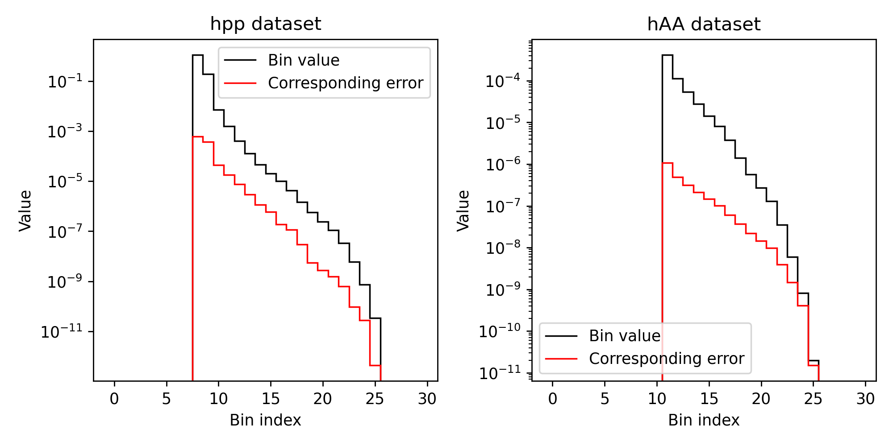
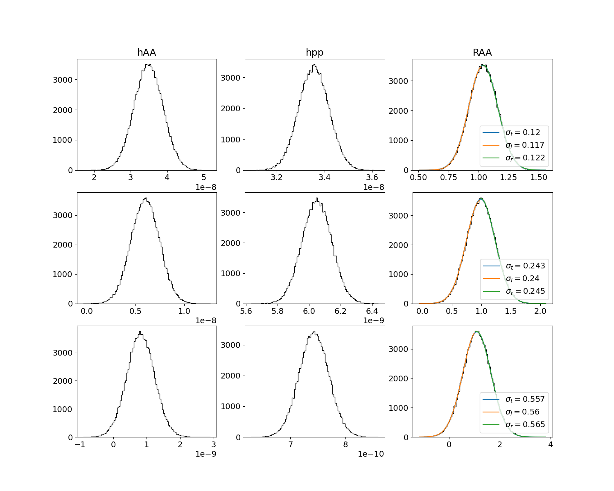
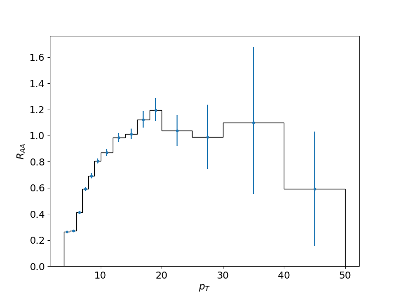
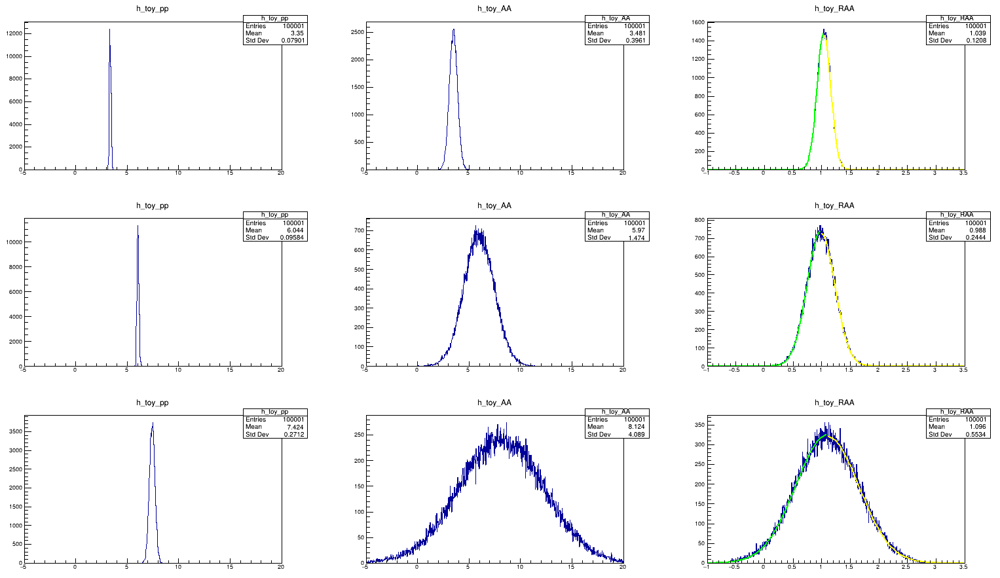
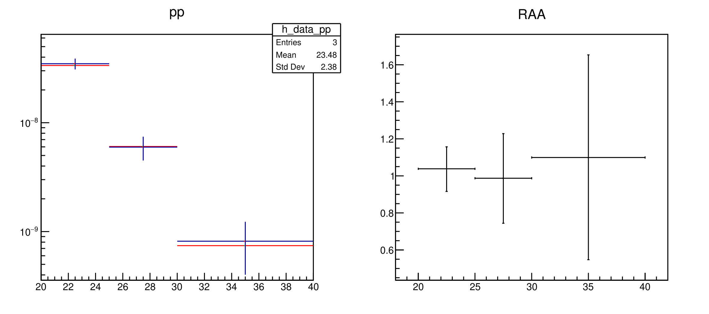

Error propagation
Perhaps the single most important aspect of experimental physics is knowing the precision of a measurement. Besides postulated constants (which are of course defined precisely) a value of a physical quantity is meaningless unless we know the accuracy with which it was measured. Quite often are physical properties not measurable directly and a set of different measurements is made to be later combined into our desired property through some theory. It is then necessary to know how do measurement errors propagate through the formulas to estimate the uncertainty of our result.
Formula - assuming Normal distribution of f
We have a physical property f which is a function of n other measurable variables \(x_i\) ( \(f = f(x_1,...,x_n)\) ) with mean values \(\mu_i\) and standard deviations \(\sigma_i\). What is the expected value and variance of \(f\)?
Let's start by performing a Taylor series expansion of \(f\) around \(\vec{\mu}\):
We now take the expected value of \(f\) while neglecting the higher order derivatives:
Knowing the mean value we can calculate the variation (still in first order derivatives):
specifically when \(x_u\) are independent (\(E[(x_i - \mu_i)(x_j - \mu_j)] = 0, i \neq j\))
which is a well known result.
Bootstrap method of error propagation
The assumptions leading to the result in the previous section were differentiability and low value of higher order derivatives. The outcome of the error propagation formula is a single value which we would like to call the standard deviation. Let's show how misleading the results stemming from this formula can be when the second assumption is false. We use a simple example of a ratio of two independent variables.
We have a variable \(f\) defined as \(a / b\) (supposed normally distributed) whose values are \(5 \pm 1\) and \(3 \pm 0.6\). According to the first result in the previous section the expected value is simply \(f = 5/3\) and the variance is
which is a result one might be satisfied with. We can however guess the errors in a different way. Let's just use the extreme values of our measurements to arrive at the extreme values of the variable \(f\). To get a maximum we need a maximum in the numerator and a minimum in the denominator. This way we get that the maximum within 1 \(\sigma\) is 2.50. Analogously for the minimum we get roughly 1.11. Compared to the expected value of about 1.67 we see that the standard deviation is very uneven and so the result from the error propagation formula might heavily differ from reality (as is the case for the mean value itself). The method we used here is similar to the bootstrap method.
The bootstrap method of error estimation
Suppose we have two gaussian distributed variables, \(A = N(\mu_{A}, \sigma_{A})\) and \(B = N(\mu_{B}, \sigma_{B})\) and we want to know the distribution of their ratio \(R = A / B\). Since we know the mean values and standard deviations we can generate an arbitrarily large random set. We generate pairs of our random variables, take their ratio and fill a histogram of \(R\). Then we extract the mean value as well as the one-sided errors by fitting a gaussian curve left and right of the most probable value (most filled bin) individually. Below is a demonstration of the method from the example in the previous section.
Output

Note the logarithmic scale in the last plot.
In the example one can clearly see that by taking a ratio of two normally distributed variables where the denominator is close to zero (with respect to its standard devitaion) a result with very uneven tails is produced. Quantitatively we can compare the sigmas of the total, left and right sided fit. A logarithmic scale in the right-most figure was chosen to highlight the large relative differences near zero which could stay hidden in linear scale.
Besides changing the errors the mean value is different as well. In the right-most figure we see that the mean value is 1.75, somewhat larger that the expected 1.67. This happens because of the long large-valued tail. The most probable value on the other hand is about 1.55.
Homework
Imagine we experimentally measured two variables and we have them in a form of a histogram: each bin has a value and an error associated with that. This is illustrated in the figure bellow.

Our task is to calculate the ratio of these two histogram (haa histogram divided by hpp histogram). This is in principle easy, but we also need to estimate the error associated with these bins. As we have established, the simple error propagation formula would not work here, because we obtain an asymmetrical error.
Following the simple example in the previous section, we need to:
- Approximate the value of each bin value with a Gaussian distribution. (Try explaining why... 🙃)
- Generate random values based on this distribution.
- Divide these generated values for each corresponding haa and hpp bin.
- Fit the result with two gaussian functions: one from left and one from right to obtain the asymmetrical left and right error.
- Present the outcome in a form of a histogram.
Task
Using these sample data, write a code to perform the steps above and calculate the errors of the ration of haa and hpp. You may select only 3 bins and perform it using that (but select the nonzero bins!).
Alternatively, use the code skeleton bellow and complete the missing parts.
import numpy as np
import matplotlib.pyplot as plt
from scipy.optimize import curve_fit
#define a gaussian curve
def gaussian(x, a,b,c):
return a * np.exp(-(x - b)**2/(2*c**2))
def find_bin_centers(edges):
return (edges[1:] + edges[:-1]) / 2
#the point is to show the difference between symmetric and asymmetric error.
#this difference can result when error propagation is not well discribed by the first order of taylor expansion of the given variable with respect to measured quantities (see lecture)
#lets generate 2 sets of gaussian data from our measurements and plot their ratio
def main():
chosenBins = np.array([11, 12, 13, 14, 15, 16])
numOfBins = chosenBins.size # number of raa bins to fit
MCsize = 100000
ratios, gaus1, gaus2, centers, values, edges = [[] for i in range(6)]
for i in chosenBins: # fill gaus1, gaus2 and ratios with arrays of normally distributed data of size MCsize
# CODE HERE
numOfMCbins = 100 # to how many bins will ratio data be separated into?
plt.rcParams['font.size'] = 14 # set font size of figures
fig, ax = plt.subplots(numOfBins, 3, figsize = [15,4 * numOfBins]) # prepare figure and axes (numOfBins is number of rows, hard coded 3 is number of columns (for haa, hpp, raa))
sigma_asym = []
for i in range(numOfBins): # iterate over rows
for a, h in zip(ax[i], [gaus1[i], gaus2[i], ratios[i]]): # plot histograms of haa, hpp and raa, save raa histogram values and edges for fitting. To plot numpy histogram use np.stairs()
# CODE HERE
# fit raa histogram values -> total, left and right fit (taken from the maximum value); output fit_total, fit_left and fit_right
# CODE HERE
ax[i][2].plot(centers[i], gaussian(centers[i], *fit_total), label = f'$\\sigma_t = {np.round(np.abs(fit_total[2]), 3)}$')
ax[i][2].plot(centers[i][:np.argmax(values[i])], gaussian(centers[i][:np.argmax(values[i])], *fit_left), label = f'$\\sigma_l = {np.round(np.abs(fit_left[2]), 3)}$')
ax[i][2].plot(centers[i][np.argmax(values[i]):], gaussian(centers[i][np.argmax(values[i]):], *fit_right), label = f'$\\sigma_r = {np.round(np.abs(fit_right[2]), 3)}$')
ax[i][2].legend(loc = 'lower right')
Raa = hAA_content / hpp_content
names = ['hAA', 'hpp', 'RAA']
for i in range(3):
ax[0][i].set_title(names[i])
fig.savefig('RAA_plots.png')
fig2, ax2 = plt.subplots(figsize = [8,6])
ax2.stairs(edges = xAxis1[11:], values = Raa[11:], color = "black")
ax2.errorbar([xAxis1[i] * 0.5 + xAxis1[i+1] * 0.5 for i in chosenBins], [Raa[i] for i in chosenBins], yerr = np.transpose(np.abs(sigma_asym)), fmt = '.')
ax2.set_xlabel('$p_T$')
ax2.set_ylabel('$R_{AA}$')
fig2.savefig('bins_with_errors.png')
plt.show()
#data to fit
# 1. Bin edges (xAxis1)
xAxis1 = np.array([0, 1, 3, 4, 5, 6, 7, 8, 9, 10, 12, 14, 16, 18, 20, 25, 30, 40, 50, 60, 70, 80, 100])
# 2. Bin content for hpp
hpp_content = np.array([1.118516, 0.1920894, 0.007120608, 0.001577695, 0.0004146155, 0.0001296542, 4.644327e-05, 2.057404e-05, 9.958874e-06, 4.334099e-06, 1.442999e-06, 5.654266e-07, 2.407638e-07, 1.094223e-07, 3.354351e-08, 6.04691e-09, 7.423793e-10, 3.350337e-11, 0, 0, 0, 0])
# 3. Bin errors for hpp
hpp_errors = np.array([0.0006107765, 0.0003700558, 4.49924e-05, 1.821935e-05, 7.447584e-06, 2.939223e-06, 1.155389e-06, 5.875219e-07, 1.855936e-07, 1.141886e-07, 3.0114e-08, 5.526975e-09, 2.701332e-09, 1.525211e-09, 6.343152e-10, 9.460454e-11, 2.709424e-11, 4.271672e-13, 0, 0, 0, 0])
# 4. Bin content for hAA
hAA_content = np.array([0, 0, 0, 0.0004135252, 0.0001128615, 5.329878e-05, 2.740152e-05, 1.417387e-05, 8.002939e-06, 3.765388e-06, 1.418623e-06, 5.724047e-07, 2.704585e-07, 1.308473e-07, 3.482406e-08, 5.969517e-09, 8.159869e-10, 1.976192e-11, 0, 0, 0, 0])
# 5. Bin errors for hAA
hAA_errors = np.array([0, 0, 0, 1.06535e-06, 4.957864e-07, 3.151375e-07, 2.136749e-07, 1.451485e-07, 1.005136e-07, 5.988379e-08, 3.659272e-08, 2.201622e-08, 1.464843e-08, 9.694462e-09, 3.96629e-09, 1.470905e-09, 4.142606e-10, 1.499208e-11, 0, 0, 0, 0])
if __name__ == "__main__":
main()
Output

Plotting the \(R_{AA} - P_T\) histogram with the estimated \(R_{AA}\) errors yields (obviously more than 3 bin errors were calculated)
//void RAA()
{
Double_t xAxis1[31] = {0, 1, 3, 4, 5, 6, 7, 8, 9, 10, 12, 14, 16, 18, 20, 25, 30, 40, 50, 60, 70, 80, 100};
TH1D *hpp = new TH1D("hpp","measured data pp",30, xAxis1);
hpp->SetBinContent(1,1.118516);
hpp->SetBinContent(2,0.1920894);
hpp->SetBinContent(3,0.007120608);
hpp->SetBinContent(4,0.001577695);
hpp->SetBinContent(5,0.0004146155);
hpp->SetBinContent(6,0.0001296542);
hpp->SetBinContent(7,4.644327e-05);
hpp->SetBinContent(8,2.057404e-05);
hpp->SetBinContent(9,9.958874e-06);
hpp->SetBinContent(10,4.334099e-06);
hpp->SetBinContent(11,1.442999e-06);
hpp->SetBinContent(12,5.654266e-07);
hpp->SetBinContent(13,2.407638e-07);
hpp->SetBinContent(14,1.094223e-07);
hpp->SetBinContent(15,3.354351e-08);
hpp->SetBinContent(16,6.04691e-09);
hpp->SetBinContent(17,7.423793e-10);
hpp->SetBinContent(18,3.350337e-11);
hpp->SetBinError(1,0.0006107765);
hpp->SetBinError(2,0.0003700558);
hpp->SetBinError(3,4.49924e-05);
hpp->SetBinError(4,1.821935e-05);
hpp->SetBinError(5,7.447584e-06);
hpp->SetBinError(6,2.939223e-06);
hpp->SetBinError(7,1.155389e-06);
hpp->SetBinError(8,5.875219e-07);
hpp->SetBinError(9,1.855936e-07);
hpp->SetBinError(10,1.141886e-07);
hpp->SetBinError(11,3.0114e-08);
hpp->SetBinError(12,5.526975e-09);
hpp->SetBinError(13,2.701332e-09);
hpp->SetBinError(14,1.525211e-09);
hpp->SetBinError(15,6.343152e-10);
hpp->SetBinError(16,9.460454e-11);
hpp->SetBinError(17,2.709424e-11);
hpp->SetBinError(18,4.271672e-13);
hpp->SetEntries(1000);
TH1D *hAA = new TH1D("hAA","measured data AA",30, xAxis1);
hAA->SetBinContent(4,0.0004135252);
hAA->SetBinContent(5,0.0001128615);
hAA->SetBinContent(6,5.329878e-05);
hAA->SetBinContent(7,2.740152e-05);
hAA->SetBinContent(8,1.417387e-05);
hAA->SetBinContent(9,8.002939e-06);
hAA->SetBinContent(10,3.765388e-06);
hAA->SetBinContent(11,1.418623e-06);
hAA->SetBinContent(12,5.724047e-07);
hAA->SetBinContent(13,2.704585e-07);
hAA->SetBinContent(14,1.308473e-07);
hAA->SetBinContent(15,3.482406e-08);
hAA->SetBinContent(16,5.969517e-09);
hAA->SetBinContent(17,8.159869e-10);
hAA->SetBinContent(18,1.976192e-11);
hAA->SetBinError(4,1.06535e-06);
hAA->SetBinError(5,4.957864e-07);
hAA->SetBinError(6,3.151375e-07);
hAA->SetBinError(7,2.136749e-07);
hAA->SetBinError(8,1.451485e-07);
hAA->SetBinError(9,1.005136e-07);
hAA->SetBinError(10,5.988379e-08);
hAA->SetBinError(11,3.659272e-08);
hAA->SetBinError(12,2.201622e-08);
hAA->SetBinError(13,1.464843e-08);
hAA->SetBinError(14,9.694462e-09);
hAA->SetBinError(15,3.96629e-09);
hAA->SetBinError(16,1.470905e-09);
hAA->SetBinError(17,4.142606e-10);
hAA->SetBinError(18,1.499208e-11);
hAA->SetEntries(60);
// Extracting spectra
// We choose 3 bins in the range of 20 to 40 to simplify looping
// The goal is to visualize 3 plots per bin, as plotting all 30 original bins would be too much.
const Int_t iNumBins = 3; // Number of bins
Double_t dAxis[iNumBins+1] = {20, 25, 30, 40}; // Bin edges
// Define histograms for pp, AA, and RAA
TH1D* h_data_pp = new TH1D("h_data_pp", "pp", iNumBins, dAxis);
TH1D* h_data_AA = new TH1D("h_data_AA", "AA", iNumBins, dAxis);
TH1D* h_data_RAA = new TH1D("h_data_RAA", "RAA", iNumBins, dAxis);
// Load values and errors for each bin, calculate the RAA ratio, and store it
for (Int_t i = 1; i <= iNumBins; i++) {
Double_t dValuePP = hpp->GetBinContent(14 + i); // Get pp value from original bin
Double_t dSigmaPP = hpp->GetBinError(14 + i); // Get pp error from original bin
h_data_pp->SetBinContent(i, dValuePP); // Set pp bin value
h_data_pp->SetBinError(i, dSigmaPP); // Set pp bin error
Double_t dValueAA = hAA->GetBinContent(14 + i); // Get AA value from original bin
Double_t dSigmaAA = hAA->GetBinError(14 + i); // Get AA error from original bin
h_data_AA->SetBinContent(i, dValueAA); // Set AA bin value
h_data_AA->SetBinError(i, dSigmaAA); // Set AA bin error
Double_t dValueRAA = dValueAA / dValuePP; // Calculate RAA as ratio of AA/pp
h_data_RAA->SetBinContent(i, dValueRAA); // Store RAA value
}
// Systematic uncertainty generation
if (gRandom) delete gRandom;
gRandom = new TRandom3(0); // Initialize random generator
TCanvas* cAsym = new TCanvas("cAsym", "Systematics", 1300, 600);
cAsym->Divide(3, 3); // Create a 3x3 canvas for the 3 bins
// Scaling factors to normalize values for easier plotting (these will cancel in the ratio)
Double_t Factor[iNumBins] = {1e8, 1e9, 1e10}; // Scaling factors per bin
// Create histograms for toy data for pp, AA, and their ratio RAA
TH1D* h_toy_pp[iNumBins]; // pp toy histograms
TH1D* h_toy_AA[iNumBins]; // AA toy histograms
TH1D* h_toy_RAA[iNumBins]; // RAA ratio toy histograms
// Histogram binning and ranges
Double_t MinBinVal = -5, MaxBinVal = 20;
Double_t MinBinErr = -1, MaxBinErr = 3.5;
Int_t nBinsVal = 1001, nBinsErr = 1001;
// Define Gaussian functions over the range MinBinVal-MaxBinVal for toy data generation
// ** CODE HERE
// Define functions for left and right Gaussian fits on both sides of the ratio histogram
// ** CODE HERE
// Store results of RAA and the fit asymmetry parameters
Double_t RAAval[iNumBins]; // RAA values (means)
RAAval[0] = h_data_RAA->GetBinContent(1);
RAAval[1] = h_data_RAA->GetBinContent(2);
RAAval[2] = h_data_RAA->GetBinContent(3);
Double_t sigma_left[iNumBins]; // Left-side sigma from fit
Double_t sigma_right[iNumBins]; // Right-side sigma from fit
// Loop over bins
for (Int_t k = 0; k < iNumBins; k++) {
h_toy_pp[k] = new TH1D("h_toy_pp", "h_toy_pp", nBinsVal, MinBinVal, MaxBinVal);
h_toy_AA[k] = new TH1D("h_toy_AA", "h_toy_AA", nBinsVal, MinBinVal, MaxBinVal);
h_toy_RAA[k] = new TH1D("h_toy_RAA", "h_toy_RAA", nBinsErr, MinBinErr, MaxBinErr);
// Scale data to values around 1 using binContent * Factor[k] and binError * Factor[k]
// This is crucial for setting the Gaussian parameters according to the data
// ** CODE HERE
// Generate toy data
for (Int_t p = 0; p < 100001; p++) {
// Fill toy histograms with randomly sampled numbers
// ** CODE HERE
}
// Plot the toy data
Int_t N = k * 3; // Index offset for 3 histograms per bin
cAsym->cd(N + 1); h_toy_pp[k]->Draw();
cAsym->cd(N + 2); h_toy_AA[k]->Draw();
cAsym->cd(N + 3); h_toy_RAA[k]->Draw();
// Set Gaussian fit parameters (mean is fixed, normalization depends on toy data size)
// Perform the fit and store sigmas in sigma_left and sigma_right
// ** CODE HERE
}
// Print results
std::cout << "### Results Review ###" << std::endl;
for (Int_t m = 0; m < iNumBins; m++) {
std::cout << "RAA: " << RAAval[m] << " AsymLeft: " << sigma_left[m] << " AsymRight: " << sigma_right[m] << std::endl;
}
std::cout << "=======================" << std::endl;
// Convert histogram to points in graph
Double_t dX[3] = {22.5, 27.5, 35.0}; // X values for bins
Double_t dXEL[3] = {2.5, 2.5, 5.0}; // X low errors
Double_t dXEH[3] = {2.5, 2.5, 5.0}; // X high errors
Double_t dYEH[3], dYEL[3]; // Y high and low errors
for (Int_t i = 0; i < 3; i++) {
dYEL[i] = TMath::Abs(sigma_left[i]); // Fill Y low errors from fit
dYEH[i] = TMath::Abs(sigma_right[i]); // Fill Y high errors from fit
}
TGraphAsymmErrors* geRAA = new TGraphAsymmErrors(3, dX, RAAval, dXEH, dXEL, dYEH, dYEL);
geRAA->SetTitle("RAA");
// Plotting
TCanvas* cBin = new TCanvas("cBin", "Bins", 1300, 600);
cBin->Divide(2, 1);
// Plot pp and AA histograms
cBin->cd(1);
cBin->GetPad(1)->SetLogy();
h_data_pp->SetMarkerColor(3);
h_data_pp->SetLineColor(3);
h_data_pp->Draw("e");
h_data_AA->SetMarkerColor(2);
h_data_AA->SetLineColor(2);
h_data_AA->Draw("same");
// Plot RAA with asymmetric errors
cBin->cd(2);
geRAA->Draw("ap");
}
Output

Plotting the \(R_{AA} - P_T\) histogram with the estimated \(R_{AA}\) errors yields - using TGraphAsymErrors